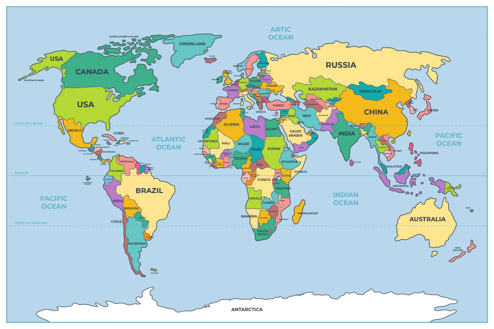

Legado y proyección fuera de China
El maoísmo no impactó por igual a todos los países del mundo: influyó con distinta fuerza en movimientos políticos, partidos y grupos específicos según cada realidad local.
Haz clic sobre un punto rojo en el mapamundi para centrar la zona y ver su ficha:

Alcance histórico: El maoísmo no se implantó de forma uniforme en todo el planeta ni en todos los países de cada continente. En muchos Estados no tuvo presencia relevante, mientras que en otros fue reinterpretado —a veces de manera dogmática o violenta— por actores locales con historias propias.